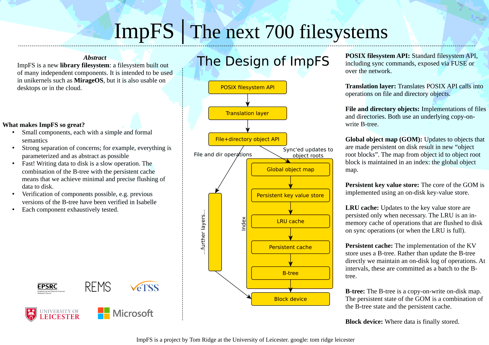

Categories: filesystems
Filesystems
With others, I am working on formally specifying and verifying filesystems (eg SibylFS). I am also working on a verified filesystem implementation called “ImpFS”.
ImpFS
ImpFS is a new filesystem based on B-trees and persistent logs. The main “management” page (with links to all the subproject etc) is here: https://tomjridge.github.io/ocamldocs/
Some example components:
| Title | Description |
|---|---|
| tjr_btree | tjr_btree is a Copy-on-Write and mutate-in-place implementation of a B-tree-like on-disk datastructure. |
| tjr_kv | tjr_kv is a key-value store for OCaml |
| mini-fs | Frontend filesystem components, including FUSE bindings, networking etc. |
| tjr_impfs | The ImpFS filesystem |
“The ImpFS filesystem”, a talk for OCaml’20, part of ICFP’20:
A video showing the current state of ImpFS:
Recent presentations and posters
- A key-value store for OCaml, presented at ML’19, colocated with ICFP’19. See “related links” below for article and slides.
- I discussed ImpFS at a recent VeTSS meeting. The related poster is reproduced below.

Older work: SibylFS
SibylFS is a formal model of POSIX-like and real-world filesystems, and simultaneously a test oracle which can be used to check real-world traces of filesystem behaviour. The main page for SibylFS is here.
Related posts:
- 2020-01-20 SQLite assumptions, or how to corrupt an SQLite database
- 2019-12-18 VeTSS annual summary
- 2019-08-30 B-tree random write performance
- 2019-08-21 ML'19 Workshop at ICFP: A key-value store for OCaml
- 2018-05-30 Potential improvements in filesystem performance
- 2017-09-06 OCaml workshop talk: A B-tree library for OCaml
- 2017-05-30 OCaml workshop submission: A B-tree library for OCaml
- 2017-06-13 Interesting article on ext4 free space allocation
- 2017-03-16 tjr-btree: a CoW B-tree library in OCaml
- 2016-05-27 Visit to Cambridge, for REMS workshop
- 2016-01-27 Talk at York University
- 2015-10-05 SibylFS presentation at SOSP'15
- 2015-09-28 SibylFS SOSP poster
- 2015-09-21 SibylFS presentation to Industrial Advisory Board
- 2015-06-28 SOSP 2015 paper acceptance for SibylFS
- 2015-04-21 REMS Cambridge talk on SibylFS
- 2013-11-13 Engineer position
- 2013-04-01 PhD position funded by Microsoft Research
- 2013-02-01 EPSRC grant funded